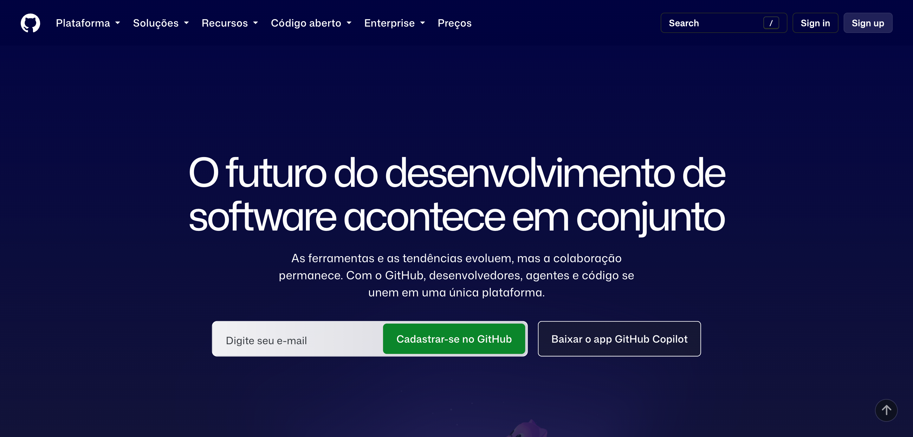
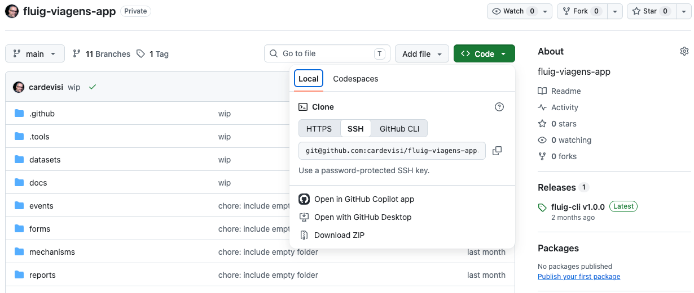
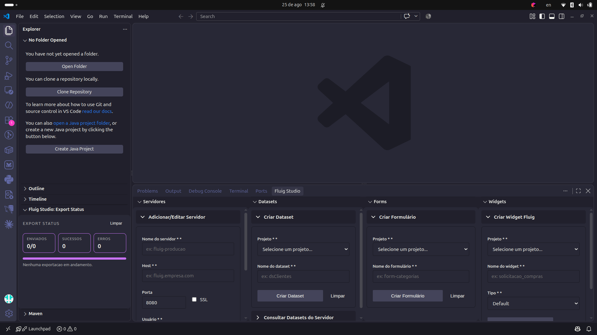
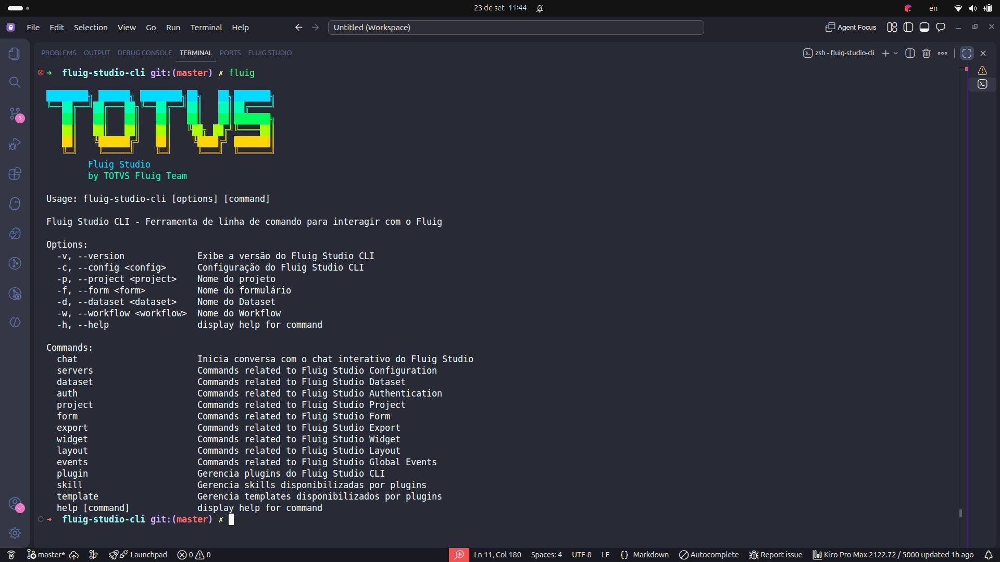

Neste codelab, você vai reconstruir o projeto fluig-viagens-app-min, acompanhando um fluxo de desenvolvimento que se aproxima de times que precisam publicar com mais segurança e qualidade. Ao longo da aula, você vai entender como combinar implementação, testes automatizados e pipeline de CI/CD para criar uma camada de qualidade antes do envio de recursos para produção. Em vez de focar apenas no código do dataset, a proposta é mostrar o caminho completo: desenvolver, validar, automatizar e preparar a publicação em um servidor Fluig remoto com o apoio do GitHub Actions.
Ao final, você terá um projeto que:
fluig-deploy.yml.ds-viagens-paises.js.npm test..github/workflows/fluig-deploy.yml.ghcr.io/cardevisi/fluig-cli:0.1.0.node:vm.fluig-viagens-app-min/
├── datasets/
│ └── ds-viagens-paises.js
├── tests/
│ └── datasets.contract.test.js
├── .github/
│ ├── docker/
│ │ └── fluig-cli/
│ │ └── Dockerfile
│ ├── scripts/
│ │ └── fluig-resource-deploy.mjs
│ └── workflows/
│ └── fluig-deploy.yml
├── docs/
│ └── codelab-fluig-viagens-app.md
├── fluig.json
└── package.json
Você vai precisar de:
node --version
git --version

O repositório usado nesta aula é:
https://github.com/cardevisi/fluig-viagens-app-min
Primeiro, faça o clone do projeto base:
git clone git@github.com:cardevisi/fluig-viagens-app-min.git
mv fluig-viagens-app-min fluig-viagens-app-aluno-02
cd fluig-viagens-app-aluno-02
Depois, confira o repositório remoto configurado no clone:
git remote -v
Em seguida, crie o seu repositório no GitHub com o GitHub CLI:
gh repo create cardevisi/fluig-viagens-app-aluno-02 --private
Agora atualize o origin para apontar para o repositório que você acabou de criar:
git remote set-url origin git@github.com:cardevisi/fluig-viagens-app-aluno-02.git
git remote -v
Por fim, envie a sua cópia do projeto para o GitHub:
git push -u origin main
aside note Para usar gh repo create, você precisa já estar autenticado no GitHub CLI. Se necessário, rode gh auth login antes de começar. O comando git push -u origin main foi escolhido porque, após o clone, a branch local existente é a main. O comando git push origin fluig-viagens-app-aluno-02 falharia nesse momento, já que essa branch ainda não existe localmente.

Antes de iniciarmos a implementação, vamos conhecer a nova extensão para VS Code para desenvolvimento no Fluig. Uma visão geral das principais funcionalidades que poderão ser utilizadas no seu dia a dia.

Principais recursos da extensão VS Code para Fluig:
Com a visão geral da extensão, agora vamos olhar rapidamente o Fluig CLI em funcionamento. Esse momento é importante para você perceber como a experiência de uso do Fluig CLI se conecta com a automação que aparece mais adiante no pipeline.

Para essa demonstração, vamos utilizar uma sequência curta de comandos do Fluig CLI como exemplo:
fluig --help
fluig projects list
fluig servers list
Ao acompanhar o terminal, observe estes pontos:
A implementação mínima aqui demostrada tem foco em três blocos:
datasets/: onde ficam os datasets Fluig.tests/: onde ficam os testes automatizados..github/: onde ficam Dockerfile, script de deploy e workflow.Essa estrutura é suficiente para demonstrar como configurar uma esteira completa de desenvolvimento, com testes automatizados e pipeline de CI/CD. Mas você poderá expandir a estrutura de acordo com suas necessidades.
O package.json atual tem apenas um comando de teste:
{
"name": "fluig-viagens-app",
"version": "1.0.0",
"private": true,
"description": "Exemplo mínimo de testes e deploy de datasets Fluig",
"scripts": {
"test": "node --test"
},
"engines": {
"node": ">=20"
}
}
Com isso, basta rodar:
npm test
O fluig.json é o arquivo que concentra os metadados e as configurações principais do projeto Fluig. Em projetos maiores, ele pode reunir informações sobre o projeto, integrações com o CLI e parâmetros usados em processos de automação. Em outras palavras, é um ponto central de configuração que ajuda as ferramentas do ecossistema a entenderem como o projeto deve ser lido e executado.
No modelo atual, o fluig.json guarda apenas o essencial para o script de deploy:
{
"name": "fluig-viagens-app",
"description": "Projeto de viagens com dataset e teste de contrato",
"version": "1.0.0",
"author": "Carlos Oliveira",
"license": "UNLICENSED",
"cli": {
"serverName": "fluig-ci"
}
}
Chave | Função |
| Nome lógico do projeto |
| Descreve de forma resumida o objetivo do projeto |
| Indica a versão atual do projeto |
| Identifica quem mantém ou publicou o projeto |
| Define o tipo de licença associado ao projeto |
| Nome base usado pelo script para criar o servidor no Fluig CLI |
Abra datasets/ds-viagens-paises.js. O dataset atual já está pronto e usa a assinatura padrão do Fluig: a função createDataset(fields, constraints, sortFields) devolve um objeto montado com DatasetBuilder.
Na prática, esses parâmetros representam:
fields: as colunas solicitadas pela consulta;constraints: os filtros recebidos na chamada do dataset;sortFields: os campos pedidos para ordenação.Neste exemplo, eles aparecem para respeitar o contrato do Fluig, mesmo sem influenciarem o retorno, porque o dataset devolve sempre a mesma lista fixa de países.
function createDataset(fields, constraints, sortFields) {
// Assinatura padrão de datasets no Fluig:
// - fields: colunas solicitadas pela consulta
// - constraints: filtros recebidos na chamada
// - sortFields: campos pedidos para ordenação
void fields;
void constraints;
void sortFields;
var ds = DatasetBuilder.newDataset();
var rows = [
["BRA", "Brasil", "BR"],
["USA", "Estados Unidos", "US"],
["ARG", "Argentina", "AR"],
["CHL", "Chile", "CL"],
["URY", "Uruguai", "UY"],
["PRY", "Paraguai", "PY"],
["BOL", "Bolívia", "BO"],
["PER", "Peru", "PE"],
["COL", "Colômbia", "CO"],
["VEN", "Venezuela", "VE"],
["MEX", "México", "MX"],
["DEU", "Alemanha", "DE"],
["ESP", "Espanha", "ES"],
["PRT", "Portugal", "PT"],
["FRA", "França", "FR"],
["ITA", "Itália", "IT"],
["GBR", "Reino Unido", "GB"],
["JPN", "Japão", "JP"],
["CHN", "China", "CN"],
["AUS", "Austrália", "AU"],
];
ds.addColumn("codigo", DatasetFieldType.STRING);
ds.addColumn("nome", DatasetFieldType.STRING);
ds.addColumn("sigla", DatasetFieldType.STRING);
for (var i = 0; i < rows.length; i++) {
ds.addRow(rows[i]);
}
return ds;
}
codigo, nome e sigla.require, porque no Fluig as globais já existem no runtime.Em vez de criar toda a estrutura de teste do zero para cada dataset, o projeto usa uma base reaproveitável de validação:
tests/datasets.contract.test.js
Essa base concentra apenas o que pode ser compartilhado entre diferentes datasets. Ela faz quatro coisas:
datasets/;DatasetBuilder e DatasetFieldType;Isso é útil porque futuros datasets podem ter estruturas e regras de negócio diferentes, mas ainda assim continuarão precisando de algumas validações comuns, como carregamento do script, criação do dataset e consistência entre colunas e linhas.
Trecho principal:
const dataset = loadDataset(relativePath);
const columns = dataset.getColumns();
const rows = dataset.getRows();
assert.ok(Array.isArray(columns));
assert.ok(Array.isArray(rows));
assert.notEqual(columns.length, 0);
const columnNames = columns.map((column) => column.name);
assert.equal(new Set(columnNames).size, columnNames.length);
for (const row of rows) {
assert.equal(row.length, columns.length);
}
Para o dataset ds-viagens-paises.js, o teste ainda faz validações específicas:
if (relativePath === "datasets/ds-viagens-paises.js") {
assert.deepEqual(columnNames, ["codigo", "nome", "sigla"]);
assert.equal(rows.length, 20);
assert.deepEqual(Array.from(rows.find((row) => row[0] === "BRA")), [
"BRA",
"Brasil",
"BR",
]);
}
npm test
Workflow de CI/CD do projeto contendo dois jobs:
/.github/workflows/fluig-deploy.yml
Ele responde a:
pushpull_requestworkflow_dispatchOs caminhos monitorados são:
paths:
- "datasets/**"
- "tests/**"
- ".github/**"
- "fluig.json"
- "package.json"
O primeiro job é o test:
test:
runs-on: ubuntu-latest
container:
image: node:22-bookworm-slim
steps:
- name: Checkout
uses: actions/checkout@v5
- name: Rodar testes
run: npm test
Esse job sempre vem antes do deploy.
O segundo job é o deploy, dependente do test:
deploy:
needs: test
runs-on: ubuntu-latest
if: >
needs.test.result == 'success' &&
(
github.event_name == 'workflow_dispatch' ||
(github.event_name == 'push' && github.ref == 'refs/heads/main')
)
Ou seja:
pull_request, o workflow testa, mas não faz deploy;push na main, ele testa e depois publica;workflow_dispatch, o deploy pode ser disparado manualmente.O step Descobrir datasets alterados decide o que será publicado.
Quando a execução for manual, ele usa a entrada dataset_paths. Quando a execução vier de push, ele calcula o diff entre commits:
BASE="${{ github.event.before }}"
if [[ -z "$BASE" || "$BASE" == "0000000000000000000000000000000000000000" ]]; then
BASE="$(git rev-list --max-parents=0 HEAD | tail -n 1)"
fi
DATASETS="$(git diff --name-only "$BASE" "${GITHUB_SHA}" | grep '^datasets/.*\.js$' || true)"
Depois, a lista é enviada para GITHUB_OUTPUT como steps.datasets.outputs.paths.
Isso permite:
O deploy não instala o Fluig CLI passo a passo no runner. Em vez disso, ele usa a imagem:
ghcr.io/cardevisi/fluig-cli:0.1.0
O Dockerfile local que gera essa imagem fica em:
/.github/docker/fluig-cli/Dockerfile
Trecho principal:
FROM node:22-bookworm-slim
ARG TARGETARCH
RUN case "${TARGETARCH}" in \
"amd64") cp /tmp/fluig-standalone/fluig-cli-linux-x64 /usr/local/bin/fluig ;; \
*) echo "Arquitetura suportada apenas para esta imagem: amd64. Recebido: ${TARGETARCH}" && exit 1 ;; \
esac
amd64.O container inicia executando:
node .github/scripts/fluig-resource-deploy.mjs
Esse script:
fluig.json;FLUIG_BASE_URL, FLUIG_USERNAME e FLUIG_PASSWORD;export resource para cada dataset selecionado.Trecho do loop de deploy:
for (const dataset of datasets) {
const resourceName = path.basename(dataset, ".js");
await runCli([
"export",
"resource",
"--projectPath",
workspace,
"--resourceType",
"dataset",
"--resourceName",
resourceName,
"--serverName",
connection.serverName,
]);
}
Para o pipeline funcionar no GitHub, configure em Settings > Secrets and variables > Actions:
Nome | Uso |
| Token para autenticar no GHCR e baixar a imagem do CLI |
| URL base do servidor Fluig |
| Usuário do Fluig |
| Senha do Fluig |
Nome | Uso |
| Sobrescreve o nome base do servidor criado no CLI |
Em resumo, a esteira atual faz:
npm test no job test;docker pull ghcr.io/cardevisi/fluig-cli:0.1.0;docker run com as variáveis de ambiente do Fluig;Esse fluxo vale tanto para execução automática na main quanto para disparo manual.
Você concluiu a leitura da implementação atual do projeto e já sabe:
fluig-deploy.yml concentra teste e deploy;datasets/ e rode npm test.dataset_paths preenchido.